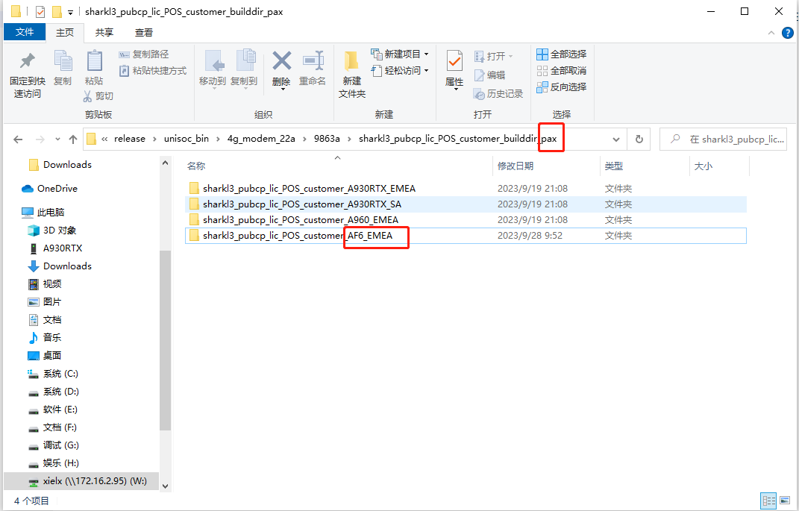

概要
项目新增nv,需要集合到系统,但是公司代码做了兼容,还得看看具体的兼容流程
关键字
pack nv
流程
vendor/sprd/release/pax_script/packpaxmodem.sh
会调用packNV
paxdroid/build/tools/paxpacktool/paxpacktool.c
调用paxpacktool程序去做bin
nv
把射频的nv文件,按照如下格式,放入路径,packpaxmodem.sh会自动打包合并

制作CPV
create_modem.sh
使用 create_modem 创建modem.zip 跟 paydroid包
#! /bin/bash
MACHINE_MODEL=AF6
PAYDROID_PLATFORM_NAME=Acacia
PAYDROID_ANDROID_VERSION=12.0.0
VENDORID=01
ZONE=2
MODEM_VERSION=01
MODEM_NAME=${MACHINE_MODEL}_BKCP_PayDroid_${PAYDROID_PLATFORM_NAME}_modem_V${VENDORID}.${ZONE}.${MODEM_VERSION}
PAYDROID_MODEM_NAME=${MODEM_NAME}.paydroid
ZIP_MODEM_NAME=${MODEM_NAME}.zip
echo "victor,create modem begin =========="
function creatCPV(){
echo "victor,creatCPV begin =========="
echo "CP_VER=\"$2\"" > $1
echo "CP_TIME=\"`date +%s`\"" >> $1
echo "CP_MODEL=\"$3\"" >> $1
echo "CP_ASSERT=\"$4\"" >> $1
echo "victor,creatCPV end =========="
}
function creatModemScatter(){
echo "victor,creatModemScatter begin =========="
echo "paydroidboot setvar paxmodel UIS8581E_A12_BU1" > PAX_Modem_scatter.txt
echo "paydroidboot flash pax1 CPV" >> PAX_Modem_scatter.txt
echo "paydroidboot reboot" >> PAX_Modem_scatter.txt
cp PAX_Modem_scatter.txt PAX_Modem_scatter_ppq.slp
echo "victor,creatModemScatter end =========="
}
function packModemPaydroid(){
echo "victor,packModemPaydroid begin =========="
if [ -f ./$PAYDROID_MODEM_NAME ];then
echo ---Remove exist paydroid $PAYDROID_MODEM_NAME package---
rm ./$PAYDROID_MODEM_NAME
fi
echo "victor,rar begin =========="
rar a -ppaydroid20170417 ./$PAYDROID_MODEM_NAME \
CPV \
PAX_Modem_scatter.txt \
PAX_Modem_scatter_ppq.slp
echo "victor,packModemPaydroid end =========="
}
function packModemZip(){
echo "victor,packModemZip begin =========="
if [ -f ./$ZIP_MODEM_NAME ];then
echo ---Remove exist paydroid $ZIP_MODEM_NAME package---
rm ./$ZIP_MODEM_NAME
fi
zip -r ./$ZIP_MODEM_NAME \
CPV \
PAX_Modem_scatter.txt \
PAX_Modem_scatter_ppq.slp
echo "victor,packModemZip end =========="
}
function cleanwork(){
echo "victor,cleanwork begin =========="
rm CPV
rm PAX_Modem_scatter.txt
rm PAX_Modem_scatter_ppq.slp
echo "victor,cleanwork end =========="
}
function main(){
echo "victor,main begin =========="
creatCPV ./CPV AF6_BKCP_PayDroid_12.0.0_Acacia_modem_V01.2.01 AF6 AF6:00A:PA25:EMEA
creatModemScatter
packModemPaydroid
packModemZip
cleanwork
echo "victor,main end =========="
}
# MODEM_ZIP_VER=${MACHINE_MODEL}_BKCP_PayDroid_12.0.0_Acacia_modem_V$vendorId.$Zone.$version
# vendorId
# * PA25,PA31 = 01
# * 21A = 21
# * PA61 = 02
#<Zone >：表示区域，如：
#1 表示CN (China) （国内）
#2 表示EMEA (Europe, the Middle East and Africa) （EMEA）区
#3 表示 SA (South America) （南美）区
#4 表示 NA (North America) （北美）区
#5 表示 JP (Japan) （日本）
#6 表示 T-SWIFI (Single Wifi)
#7 表示LA（Latin America） （拉丁美洲）区
# version
# * 01 ,next version 02
#creatCPV ./CPV ${MODEM_ZIP_VER} $MACHINE_MODEL $CP_ASSERT
# CP_ASSERT = AF6:00A:PA25:EMEA refer to vendor/sprd/release/pax_script/packpaxmodem.sh -> packNV
main
烧录方法
烧录CPV
在烧录ltedeltanv.bin,ltenvitem.bin